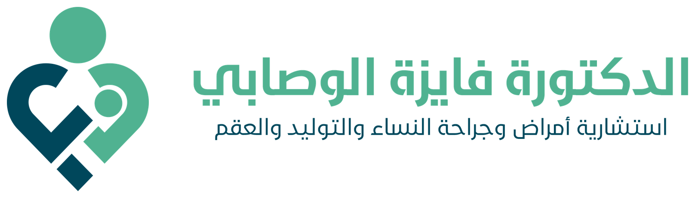
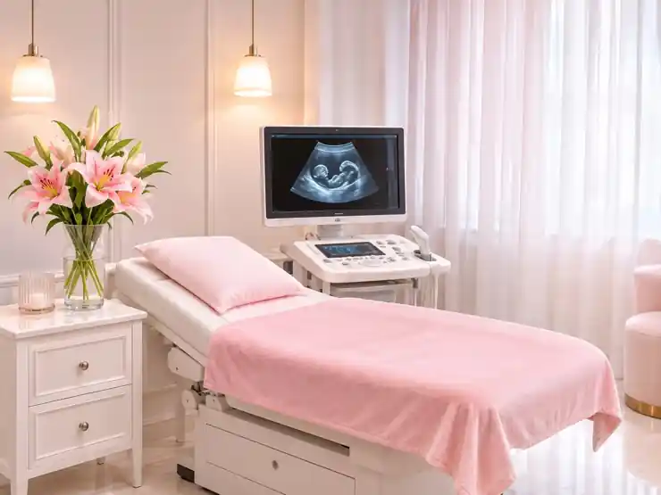

النساء والتوليد
تشخيص ومتابعة مشكلات صحة المرأة، والرعاية النسائية قبل الحمل وبعد الولادة.

عيادة الدكتورةمع الدكتورة فايزة علي ناصر الوصابي، استشارية أمراض وجراحة النساء والتوليد والعقم. متابعة للحمل ورعاية لصحة المرأة، من الاستشارة وحتى الولادة.

تعرّفي على أبرز خدمات العيادة وما يناسب احتياجاتكِ
تشخيص ومتابعة مشكلات صحة المرأة، والرعاية النسائية قبل الحمل وبعد الولادة.
متابعة الحمل الطبيعي والحمل عالي الخطورة والفحوصات اللازمة حسب التقييم.
تقييم أسباب تأخر الحمل، وتوضيح الخيارات التشخيصية والعلاجية المناسبة.
التصوير بالموجات فوق الصوتية لمتابعة الحمل وتقييم الحالات النسائية.
تقييم الاحتياج لإجراءات التجميل النسائي ومناقشة الخيارات الملائمة.
استشارات تنظيم الدورة الشهرية، ووسائل تنظيم الأسرة، والفحوصات الوقائية.
استشارية أمراض وجراحة النساء والتوليد والعقم
استشارية متخصصة في أمراض وجراحة النساء والتوليد والعقم. تشمل مجالات عملها متابعة الحمل، وتشخيص مشكلات صحة المرأة، وتقييم تأخر الإنجاب، مع توضيح الخطوات الطبية المناسبة لكل حالة.
احترام خصوصيتكِ خلال الزيارة والاستشارة
رعاية نسائية ومتابعة للحمل وتأخر الإنجاب
مناقشة الاستفسارات وشرح خطوات المتابعة
استقبال حالات الولادة 24 ساعة تحت إشراف متخصص
كيف تتواصلين وتستعدين لزيارتكِ؟
عبر الاتصال أو واتساب للاستفسار عن الزيارة
استفسري عن الوقت المناسب ضمن ساعات العيادة
أحضري الفحوصات السابقة إن وجدت
إجابات على أبرز الاستفسارات
يتم استقبال حالات الولادة على مدار 24 ساعة تحت إشراف كادر طبي متخصص. للاستفسار عن مكان الاستقبال والتنسيق يُرجى الاتصال بالرقم المعلن.
من السبت إلى الخميس، من 8 صباحًا إلى 1 ظهرًا، ومن 4 عصرًا حتى 8 مساءً. الجمعة إجازة من الدوام الاعتيادي.
نعم، تشمل خدمات العيادة متابعة الحمل والفحوصات ذات الصلة وفق التقييم الطبي.
نعم، يمكنكِ التواصل للاستفسار عن الاستشارة الطبية المتعلقة بتأخر الحمل والعقم.
تتضمن خدمات العيادة الكشف بالموجات فوق الصوتية. يمكن التأكد من نوع الفحص المطلوب عند التواصل.
يسعدنا تواصلكِ واستفساراتكِ عن خدمات العيادة